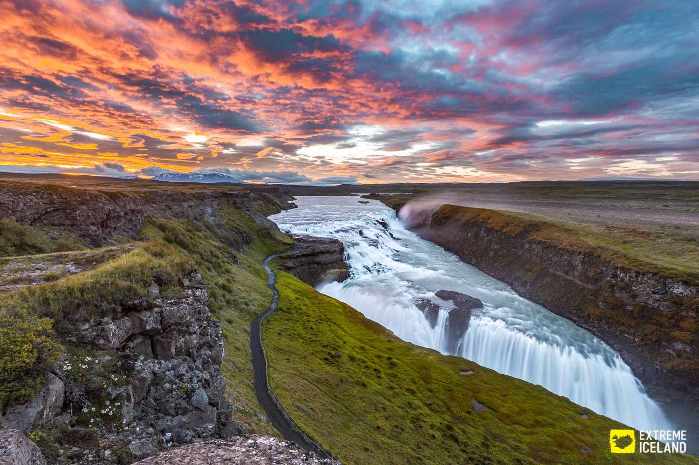
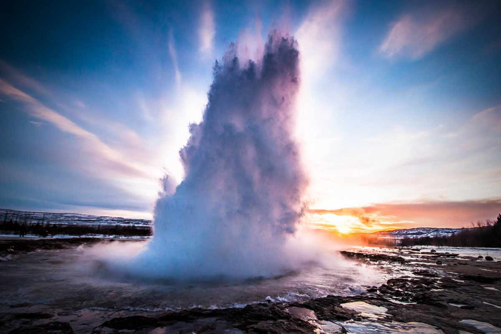
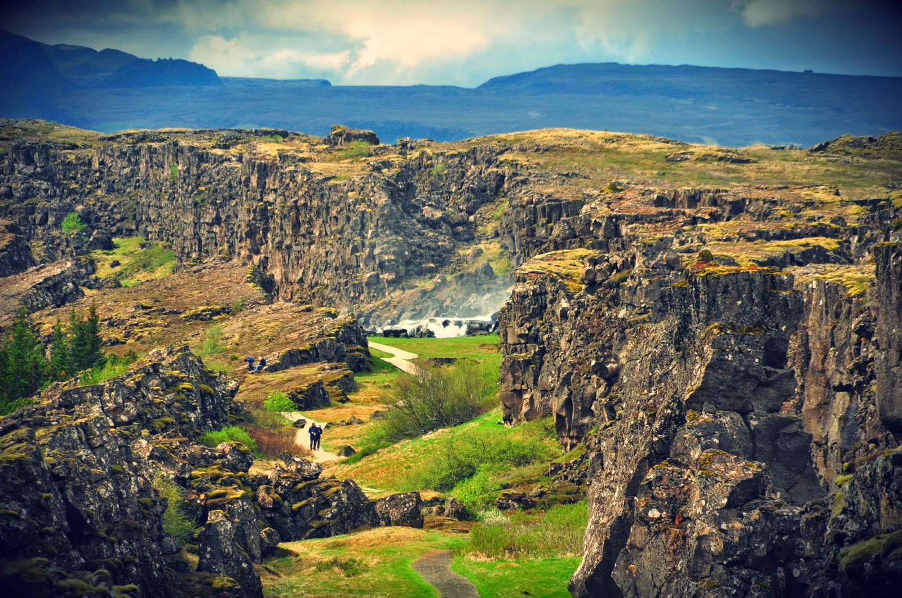

Áhugaverðir staðir á svæðinu
Á Gullna hringnum á Suðurlandi má finna helstu náttúruperlur Íslands, Gullfoss, Geysir og Þingvellir eru staðir sem þú mátt ekki missa af. Taktu forskot á sæluna og skoðaðu myndband af þessum þrem stöðum hér.
Gullfoss er af mörgum talinn einn fegursti foss Íslands. Gott aðgengi er að fossinum, göngustígur liggur frá bílastæði. Þjónustuhús er á svæðinu þar sem hægt er að komast á salerni og bæði veitingar og annar varningur er seldur.

Geysir er frægasti goshver á Íslandi. Á svæðinu eru margir aðrir goshverir sem gjósa með reglulegu millibili og því hægt að sjá með eigin augum goshver gjósa. Á Geysi er flottur veitingastaður sem við mælum með að þið prófið.

Þingvellir er þjóðgarður Íslendinga. Þar er náttúrufegurðin engri lík. Hægt er að fara í styttri og lengri göngur um svæðið. Gönguleiðir eru merktar og göngukort má nálgast í þjónustumiðstöð Þingvalla þar sem einnig er hægt að komast á salerni og kaupa veitingar. Einnig er hægt að kafa í gjánni Silfru sem þykir einn besti köfunarstaður á landinu því gjáin er svo tær. Allar nánari upplýsingar um köfun á Þingvöllum er hægt að fá í þjónustumiðstöð Þingvalla.
